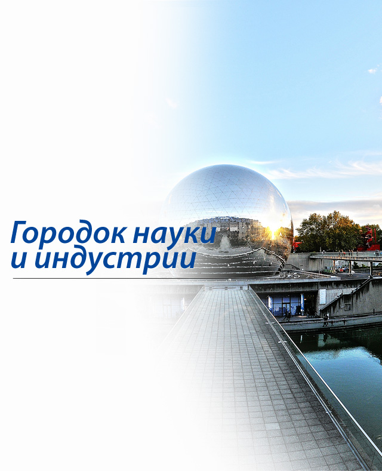

Городок науки и индустрии
Эта парижская выставка достижений народного хозяйства была выстроена в середине 1980-х. От бывшего здесь когда-то промышленного района сохранились склады сахара и зерна на набережной Луары (41, quai de la Loire) и металлический подъемный мост на улице Криме (rue de Crimée), сооруженный в 1885 году. В Ла-Виллетт тогда работали бойни и рынок скота, на котором ежедневно продавали до 1 300 голов. В 1974 году коров амнистировали, бойни закрыли, и 12 лет спустя на их месте был построен парк Ла-Виллетт (parc La Villette) с входящим в него Городом науки и промышленности (Cité des Sciences et de l’Industrie). Музейные залы Города науки и промышленности с их интерактивными аттракционами-экспонатами посвящены океану, энергии, небу и так далее. Здесь есть детский городок, «Пассаж профессий», кинотеатр Louis Lumière со стереоизображением, гигантский аквариум, отслужившая свой срок в Средиземном море подводная лодка «Аргонавт» и кинотеатр Géode с самым большим в мире полусферическим экраном.
Футуристический парк вокруг спроектировал Бернар Чуми. Здесь разместился Город музыки (Cité de la Musique), состоящий из Консерватории, концертного зала на 1 200 человек и богатой коллекции инструментов в Музее музыки. В восточной части сада находится зал Zénith, где засветились самые большие рок-звезды. В ажурной металлической конструкции бывшего рынка, сохраненной рядом с Городом музыки, устраиваются спектакли, выставки и концерты. Летом в парке работает кинотеатр под открытым небом. Здесь каждый день бесплатно крутят старые классические фильмы. Люди приходят с подстилками, циновками и подушками и смотрят кино, сидя или лежа на траве, выпивая и закусывая.


Реактивный истребитель Мираж Модель французского истребителя в натуральную величину демонстрирует современные технологические достижения.

Космическая станция Изумительно оформленная экспозиция рассказывает об условиях жизни космонавтов на орбите. В центре стоит космическая ракета.

Наутилус Модель французского батискафа наглядно демонстрирует устройство одного из наиболее современных научно-исследовательских судов.